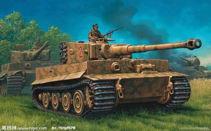

<body>  
    <button onclick="rotateImg('testImg', 'left')">向左旋转</button>  
    <button onclick="rotateImg('testImg', 'right')">向右旋转</button><br/>  
      
<script>  
    function rotateImg(pid, direction) {  
        //最小与最大旋转方向，图片旋转4次后回到原方向  
        var min_step = 0;  
        var max_step = 3;  
        var img = document.getElementById(pid);  
        if (img == null)return;  
        //img的高度和宽度不能在img元素隐藏后获取，否则会出错  
        var height = img.height;  
        var width = img.width;  
        var step = img.getAttribute('step');  
        if (step == null) {  
            step = min_step;  
        }  
        if (direction == 'right') {  
            step++;  
            //旋转到原位置，即超过最大值  
            step > max_step && (step = min_step);  
        } else {  
            step--;  
            step < min_step && (step = max_step);  
        }  
        img.setAttribute('step', step);  
        var canvas = document.getElementById('pic_' + pid);  
        if (canvas == null) {  
            img.style.display = 'none';  
            canvas = document.createElement('canvas');  
            canvas.setAttribute('id', 'pic_' + pid);  
            img.parentNode.appendChild(canvas);  
        }  
        //旋转角度以弧度值为参数  
        var degree = step * 90 * Math.PI / 180;  
        var ctx = canvas.getContext('2d');  
        switch (step) {  
            case 0:  
                canvas.width = width;  
                canvas.height = height;  
                ctx.drawImage(img, 0, 0);  
				
                break;  
            case 1:  
                canvas.width = height;  
                canvas.height = width;  
                ctx.rotate(degree);  
                ctx.drawImage(img, 0, -height);  
                break;  
            case 2:  
                canvas.width = width;  
                canvas.height = height;  
                ctx.rotate(degree);  
                ctx.drawImage(img, -width, -height);  
                break;  
            case 3:  
                canvas.width = height;  
                canvas.height = width;  
                ctx.rotate(degree);  
                ctx.drawImage(img, -width, 0);  
                break;  
        }  
    }  
</script>  
</body> 